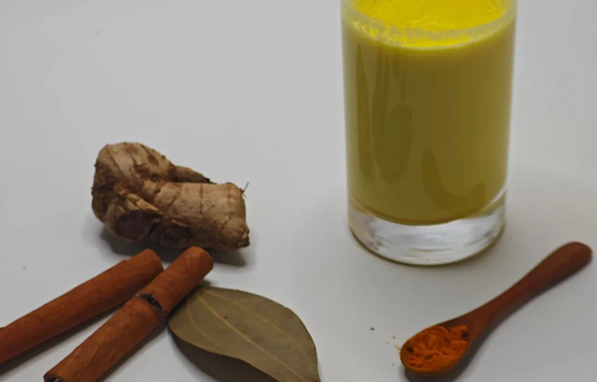

Abhyanga in Patna

Indian homes knew abhyanga long before anyone called it a spa treatment. Grandmothers massaging mustard or sesame oil into a newborn, the pre-wedding oil and turmeric rituals, the Sunday head oiling before bath: all of these are household echoes of a therapy the classical physicians recommended every day.
What abhyanga actually is
Abhyanga (अभ्यङ्ग) is formed from abhi, toward or all over, and anga, the body or limb, or from the root anj, to anoint. It means anointing the body with oil. In clinical practice it refers to a warm, medicated oil massage of the whole body (sarvanga abhyanga), given with strokes along the limbs, circular movements over joints and gentle work over the abdomen and chest.
It is not deep-tissue massage in the Western sense. The goal in Ayurveda is oleation: getting the oil to soak in, warming and softening the body. Pressure is moderate and is adjusted to the person.
A short, honest history
The Charaka Samhita, in its chapter on daily regimen, recommends oil massage for everyone and links it to strength, sound sleep, good skin and resistance to fatigue and ageing. The Ashtanga Hridaya (around the 6th to 7th century CE) opens its daily routine with abhyanga, advising special attention to the head, ears and feet, and notes that it should be avoided in kapha-dominant states, after cleansing and during indigestion. The Sushruta Samhita discusses oil application in its surgical and wound-care sections too.
The two-therapist synchronised style that many people associate with abhyanga today, and its named sequences of strokes, developed largely within Kerala's Ayurvedic tradition, closely linked to the region's martial art Kalarippayattu and its massage methods. Those regional styles are well documented in the last few centuries. Claims about precise ancient stroke sequences are often modern elaboration rather than textual record.
How it is meant to work
In Ayurvedic terms
Vata dosha, with qualities of dryness, lightness, cold and movement, is calmed by its opposite: warm, heavy, oily, steady. Abhyanga gives exactly that. The texts compare the body to a pot or a cart axle that cracks or wears out when dry and lasts when oiled. Before Panchakarma, external oleation complements internal oleation (snehapana), softening the doshas so that sweating can mobilise them.
Oil choice matters. Sesame-based oils such as bala taila, dhanwantaram taila or ksheerabala taila are common for vata. Cooler oils such as chandanadi or coconut-based preparations may be used where pitta is high. For kapha, oil may be used lightly, or replaced by dry powder massage (udvartana).
What research has shown
Evidence is modest. A small pilot study in 2011 gave twenty healthy adults one hour of abhyanga and reported lower subjective stress and a fall in heart rate after the session. A prospective study from India published in 2019 compared post-stroke patients receiving Ayurvedic massage alongside physiotherapy with those receiving physiotherapy alone and reported some advantages in early mobility, though it was not a randomised trial. These findings are encouraging and preliminary. There is no reliable evidence that abhyanga removes toxins through the skin, and we do not claim it does. Its plausible benefits are relaxation, comfort, skin softness and preparation for further treatment.
Who may benefit
- Anyone being prepared for swedana and a Panchakarma cleansing procedure.
- People with dry skin, stiffness, poor sleep or fatigue linked to vata imbalance, as part of a plan.
- Those looking for regular restorative care, after assessment.
- Older adults with stiffness, with gentler pressure and doctor approval.
When to avoid or delay abhyanga
- Fever, acute infection, or when you feel heavy and unwell with indigestion (classical ama state).
- Right after vamana or virechana, until the doctor allows it.
- Skin conditions with open wounds, oozing eczema, active fungal infection, burns or rashes in the area.
- Deep vein thrombosis or suspected clots, varicose veins (no direct pressure), recent fractures or surgery.
- Uncontrolled high blood pressure or serious heart disease, unless cleared.
- Pregnancy: only specific, gentle protocols under medical guidance.
- Bleeding disorders or blood-thinning medicines: pressure is modified; tell the doctor.
- Known allergy to any oil ingredient.
Your session at Sabka Ved Wellness
Before the massage
Dr. Aditya Kunal decides whether abhyanga suits you, which oil, how warm, how long, and whether swedana should follow. If you are in a Panchakarma programme, abhyanga is usually scheduled on the oleation and swedana days before the main procedure.
During the session
- You change into a disposable undergarment in a private, warm room. Modesty is respected throughout, and same-gender therapists are arranged.
- Warm oil is applied to the head and crown first in most protocols, then the body.
- With you seated, then lying on your back, sides and front, the therapist uses long strokes along the limbs, circular strokes over the joints and gentle clockwise movements over the abdomen.
- Pressure is checked with you. Abhyanga should feel warming and calming, never painful.
- After the massage you rest for a few minutes to let the oil absorb, and most often move on to steam or another form of swedana.
After the session
A warm bath is taken after a gap, often with a mild herbal powder or green gram flour to remove excess oil, never with cold water. You are asked to avoid cold drinks, air-conditioned drafts, heavy meals and exertion for the rest of the day. Light, warm food is best.
Daily self-massage versus clinical abhyanga
The classical texts recommend a simple form of oil massage as part of everyday routine, and many families in Bihar still oil the head and feet regularly. That kind of home practice, with a plain oil that suits you, is very different from clinical abhyanga given as part of Panchakarma. In the clinic, the oil is medicated and chosen for a reason, the quantity and temperature are controlled, the session is timed to precede swedana, and the whole sequence is planned around a cleansing procedure that comes days later. If you want to continue oil massage at home after your programme, Dr. Aditya Kunal can suggest a suitable oil and tell you when to skip it, for example on days of indigestion, heaviness, fever or a cold. In Patna's humid monsoon months, people with kapha tendencies are often advised to use less oil and to bathe it off sooner, while the dry, cold weeks of a Bihar winter usually suit regular oiling better.
What goes into the cost
Medicated oils prepared by classical methods take days to make and cost more than plain oil, and a full-body session uses a generous quantity that is warmed and, for hygiene, not reused. A trained therapist's time, sometimes two therapists working together, fresh linen and towels for every patient, a warmed room, bathing facilities, and the doctor's choice of oil and plan all add up. That is why we do not compete with very cheap massage offers, and we do not publish prices online. Your plan and its cost are explained at consultation.
What abhyanga is not
It is not a cure for any disease and it is not a substitute for medical treatment. It also is not a 'detox' in the popular sense. It is a classical, soothing and preparatory therapy, done properly with the right oil for your body.
Book a consultation
If you would like abhyanga as part of a Panchakarma plan, or on its own for regular care, start with an assessment so the oil and method suit you. Request an appointment or book your consultation with Dr. Aditya Kunal.
Sources
- Basler AJ. Pilot study investigating the effects of Ayurvedic Abhyanga massage on subjective stress experience. J Altern Complement Med, 2011
- Sankaran R et al. A prospective study on the effects of Ayurvedic massage in post-stroke patients. J Ayurveda Integr Med, 2019
- Snehadhyaya, Charaka Samhita Sutra Sthana 13 (Charak Samhita online)
We also serve patients from


Preparation, therapy, recovery. In that order.


Related therapies
Pages that pair naturally with this one.


Questions about Abhyanga

No. Abhyanga uses medicated oils chosen by a doctor for your constitution and condition, and its aim is oleation and calming vata, often as preparation for swedana and Panchakarma. Spa massage usually focuses on muscles and relaxation.
It depends on your assessment. Sesame-based oils such as bala or ksheerabala taila are common for vata, cooler preparations for pitta, and very little oil, or dry powder massage, for kapha.
Generally no. Fever, acute infection and indigestion are classical reasons to delay oil massage.
Usually after a short rest and swedana, with warm water and a mild herbal powder or gram flour. Avoid cold water and drafts.
Yes, we arrange same-gender therapists and keep you covered and comfortable throughout.